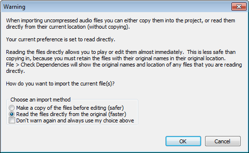
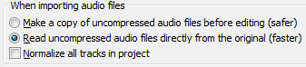
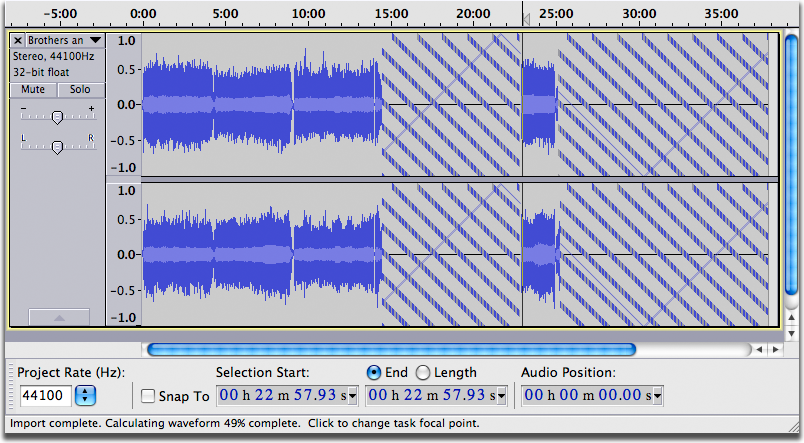

On-Demand Loading
From Audacity Manual
On-Demand Loading is available as an option when importing most uncompressed files like WAV and AIFF (and on Linux, FLAC).
Importing different file types using On-Demand Loading
Uncompressed files
On-Demand Loading is used for most uncompressed files when choosing to read these files "directly from the original (faster)" instead of copying them in. The "read directly" option can be chosen when the warning appears for importing uncompressed audio files:
- 
and also in the Import / Export Preferences:
- 
The warning can be turned off in the Warnings Preferences, in which case the current import setting in Preferences will be used automatically.
On-Demand Loading of uncompressed files is much faster than copying in the audio, even if you wait for the waveform drawing to complete before playing or editing.
Uncompressed files shorter than 30 seconds long will always import using the normal progress bar even if you choose to "read directly". However on most machines the import will still seem to be immediate unless it is a slower machine or the processor is very busy with other tasks.
| If you choose "read directly" when importing WAV, AIFF or FLAC files, do not rename, move or delete those files, otherwise your project will be missing audio. You can still copy in the audio to the project at any time at . See Audacity Projects for more details. |
Using On-Demand Loading
When you import an On-Demand file by any means ( , or dragging in), a sequence of patterned blocks appears almost immediately, representing the uncomputed waveform. The blocks are then progressively replaced from left to right by the normal Audacity waveform as soon as it has been computed. You can play or edit the track at once wherever that normal waveform is displaying, without waiting for the remainder of the waveform to be drawn.
You can also change the focal point from which the waveform is computed. To do this, either click in the track at the leftmost point from which you want the waveform drawn, or drag a selection in either direction. In the image below, we clicked to place the cursor in the waveform at a time of 23 minutes. The waveform then started being drawn rightwards from the cursor point:
- 
Using read-directly On-Demand, you can now edit or play from the new focal point. You can also start playback from a new position without changing the focal point of the waveform by clicking or dragging a region in the Timeline.
Once the computation point has reached the end of the track, any uncomputed waveform will be drawn from right to left, unless interrupted by clicking elsewhere at an uncomputed point.
The percentage of the waveform that has been computed is displayed on the Status Bar, as shown at bottom left of the image above. When multiple files are being imported, the Status Bar will display the overall percentage of the multiple tracks that has been computed. To make the Status Bar display the percentage completion of a particular track, move the mouse over that track.
Slow seeking when moving the focal position
If the drive the file is being imported from is not able to seek rapidly through the file, the On-Demand imported track may be slow to respond when moving the focal position. This will be especially noticeable before the waveform has been fully computed. Slow seeking could occur on Mac computers when importing CD tracks from the Finder, or when using older external USB drives.